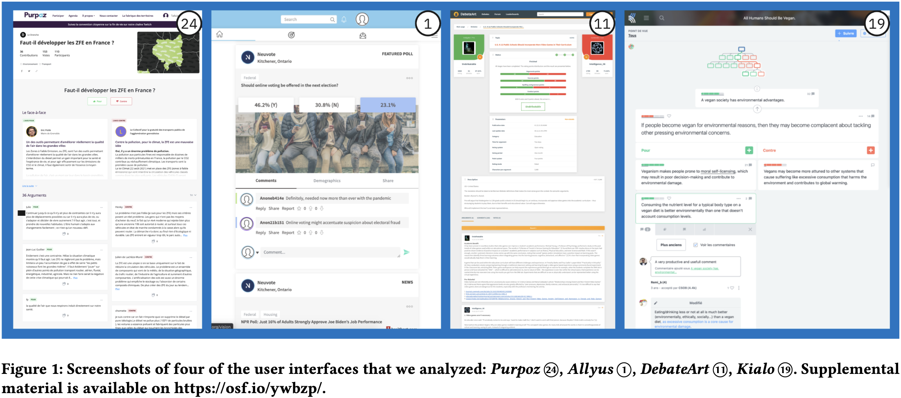
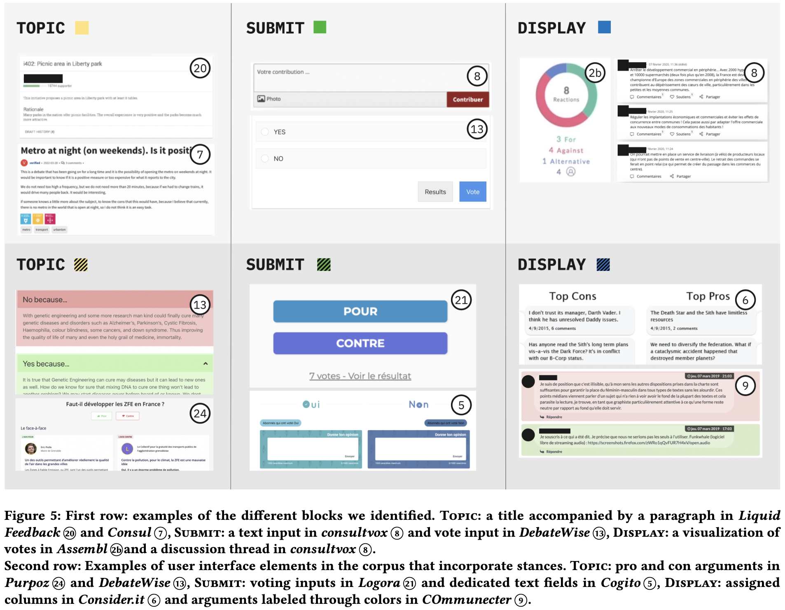
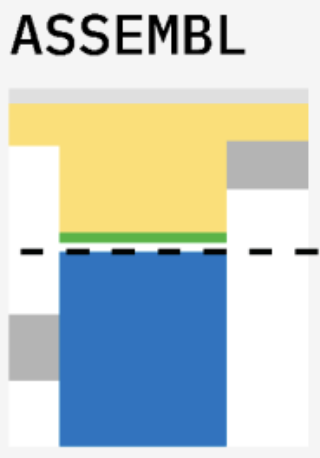
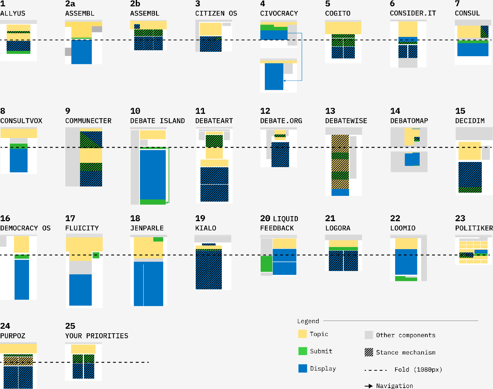
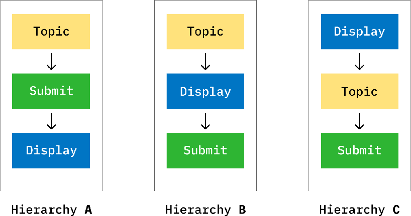

§ 01What it is.
Reverse wireframing is a method for systematically analyzing the graphical user interfaces of a set of existing tools as visual artifacts. You collect screenshots, draw reverse wireframes on top of them to expose each layout's block hierarchy, code the blocks, abstract them into comparable diagrams, and assemble those into a mosaic so that patterns can be read across the whole set at once. In the source study the corpus was 25 online debate platforms.
§ 02Why use it.
A graphical user interface carries visible evidence of how a tool structures activity: its information hierarchy, its visual patterns, and the norms it quietly embeds. Studying interfaces as visual artifacts, rather than only their content or their usage, reveals how design frames a practice. A side-by-side visual comparison surfaces the shared conventions and the meaningful differences across a whole class of tools, which you cannot see by looking at any one of them in isolation.
§ 03How to do it.
Frame the question and scope the corpus.
Start from your research questions and decide the class of interface you want to compare. This scoping is what defines the corpus: which tools belong in it and which do not. In the source study the scope was online debate platforms, found by screening civic-technology directories.
Collect the interfaces.
Gather the set of tools that fit the scope, then capture a screenshot of the key page of each one, one per distinct interface. Fix the conditions so the set stays comparable: the source study used the desktop version of each platform's debate page.

Classify the corpus.
Read each tool's homepage and "about" text, extract those descriptions, and classify the tools by type and claimed purpose, so you understand what the set contains before analyzing its layouts.
Redraw a detailed reverse wireframe.
On top of each screenshot, draw a wireframe that captures every structural element: blocks, buttons, titles, text areas, input fields, and diagrams. This exposes the hierarchy of interface blocks underneath the surface styling.
Code the blocks.
Divide each wireframe into blocks (coherent visual and interactive units), give each an identifier, and record them in a spreadsheet. Define the coding collaboratively on a few examples until coders agree, then code the whole corpus and review it together.

Diagram, abstracting to common blocks.
Reduce each detailed wireframe to only the common main blocks identified in coding, assigning a consistent color to each block type. The result is a set of clean, comparable abstract wireframes.

Assemble a mosaic.
Lay all the abstract wireframes together in one grid, so the entire corpus is visible and comparable at a glance. The mosaic is the artifact that makes cross-corpus patterns legible.

Analyze the mosaic.
In collaborative sessions, read the mosaic against the original screenshots, which still hold the semantic detail. Compare block compositions and hierarchies to identify the design patterns, similarities, and differences across the set.

§ 04In practice.
The source study assembled 25 online debate platforms from civic-technology directories. Three HCI researchers, two of them graphic and web designers, worked through these phases over several years, leaning on Gestalt principles and grid systems to read the layouts. The mosaic of abstract wireframes is the method's signature output: a single view in which all 25 interfaces can be compared block by block.
Reading across that mosaic, the researchers found a strong similarity among the platforms and a shared emphasis on individual input, and used the differences that remained to discuss how layout frames the very practice of debate. The point of the method is exactly this: turning a scattered set of interfaces into one comparable visual field where structural patterns become arguable evidence.
Frappier, T., Bressa, N. & Huron, S. (2024) ‘Jumping to conclusions: a visual comparative analysis of online debate platform layouts’. Proceedings of the 2024 Nordic Conference on Human-Computer Interaction (NordiCHI ’24). doi.org/10.1145/3679318.3685377
@inproceedings{Frappier_2024, series={NordiCHI 2024}, title={Jumping to Conclusions: A Visual Comparative Analysis of Online Debate Platform Layouts}, url={http://dx.doi.org/10.1145/3679318.3685377}, DOI={10.1145/3679318.3685377}, booktitle={Nordic Conference on Human-Computer Interaction}, publisher={ACM}, author={Frappier, Tallullah and Bressa, Nathalie and Huron, Samuel}, year={2024}, month=Oct, pages={1–15}, collection={NordiCHI 2024} }
Screenshots, wireframes, and mosaics on this page are reused under a CC BY 4.0 license. Source and materials: hal-04784834, osf.io/ywbzp.
§ 05Ways to adapt it.
Apply it to any class of tools, not just debate platforms. Compare mobile against desktop layouts, or capture whole interaction flows and states rather than a single landing page. Vary the abstraction level of the wireframes depending on whether the question is about fine structure or high-level layout, and choose the block palette to foreground the dimension you care most about.
Submit way(s) to adapt it →§ 06Other research using this method.
To be added.
Submit other research using this method →